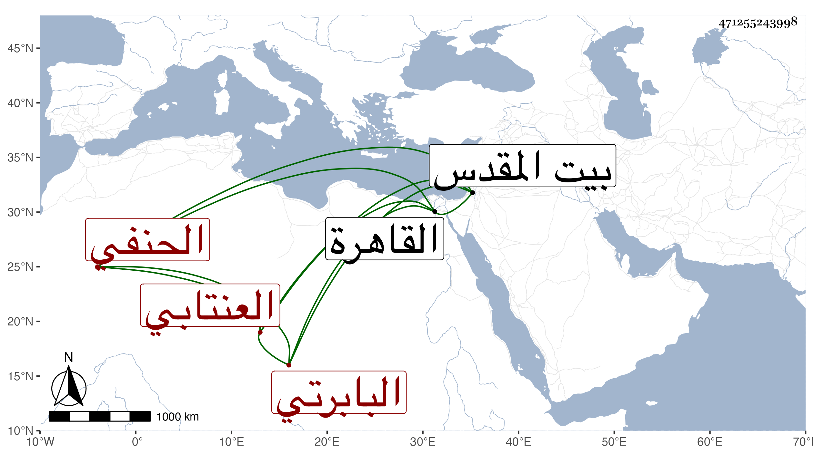

0902Sakhawi.DawLamic.ITO20230111-ara1.EIS1600.471255243998
Biography ID: 471255243998
756
خليل بن عبد الله خير الدين البابرتي العنتابي الحنفي نزيل القاهرة ووالد محمد الآتي . قال العيني قدم من البلاد الشمالية في حدود سنة خمس وثمانين وخمسمائة فتنزل بالصرغتمشية واشتغل كثيرا ثم بالبرقوقية في أيام العلاء ثم السيف السيراميين ولازم ثانيهما في العلوم وتزوج ابنته ، وكان يعاشر الأمراء كثيرا فسعوا له في قضاء الحنفية عند الناصر فأجاب ولكنه لم يتم . مات وقد زاد على الستين سنة تسع وخلف كتبا كثيرة ، وكذا قال شيخنا في أنبائه انه عين مرة لقضاء الحنفية فلم يتم وزاد أنه ولي قضاء القدس في سنة أربع وثمانين وكان فاضلا في مذهبه محبا للحديث وأهله مذاكرا بالعربية كثير المروءة .
